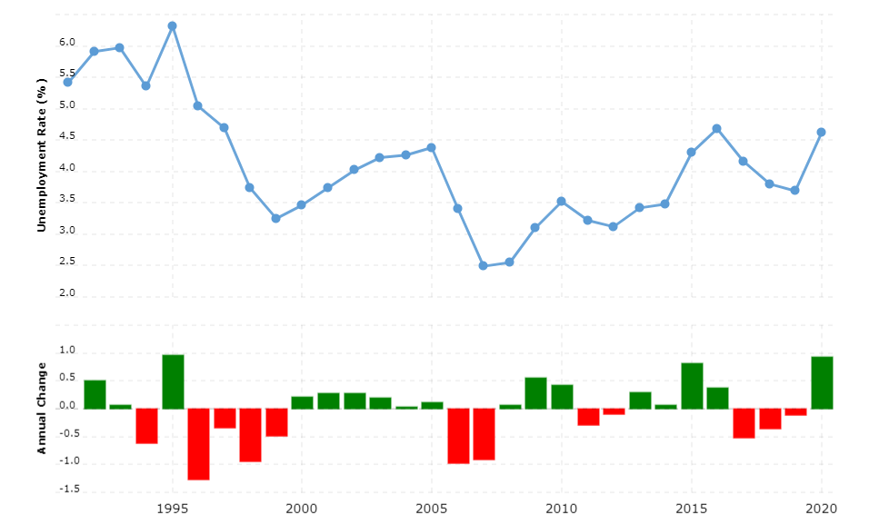

Página principal
Este es un estudio del mercado de trabajo noruego. La recopilación de datos, cuyas fuentes se encuentran en el apartado Bibliografía, y su estructuración y análisis ha sido realizado por los dos autores de esta página, Daniel Abad Gamero y Víctor Gómez-Antequera Ábalos. Para más información, visitar el apartado Sobre nosotros. Una de las razones por las cuales hacemos esta investigación es para mostrar e interpretar cómo afecta el mercado de trabajo a la economía de Noruega y, de una u otra manera, a la calidad de vida de sus habitantes, pues Noruega se encuentra en el primer puesto en el Índice de Desarrollo Humano del mundo.
1. Introducción
Noruega es un país escandinavo situado al noroeste de Suecia y al norte de Dinamarca. Sus 25.148 km de línea de costa, su punto más alto, el Goldhøpiggen (2469 m) junto al extenso paisaje montañoso, sus abundantes glaciares y verdes praderas forman un total de 323.802 km² de superficie, lo cual es, comparándola con España, un 64 %.
Presenta un sistema de gobierno monárquico constitucional, siendo Harald V el rey (jefe de estado) y Jonas Gahr Støre el primer ministro, que pertenece al Partido Laborista de Noruega, un partido socialdemócrata con el lema “todos deben ser parte” y con una economía social de mercado. Colocado en el puesto 22, tiene un PIB nominal de más de tres veces menor al de España, 443.252 dólares estadounidenses, equivalente a 415,836 €. Aun así, el PIB per cápita es de 75.360 €, bastante mayor que el de España (25.460 €) en 2021. La moneda en uso es la Corona noruega. Además, tiene una población del 11 % en comparación con España, 5.425.270 habitantes. A pesar de haber sido uno de los países fundadores de la OTAN en 1949 y de las Naciones Unidas, ha rechazado en dos ocasiones por un referéndum su inclusión en la Unión Europea; sin embargo, participa en el EEE (Espacio Económico Europeo).
En este artículo vamos a tratar de analizar el mercado laboral de Noruega. La razón por la cual hemos escogido este país es, fundamentalmente, por su índice de desarrollo humano (HDI, por sus siglas en inglés). Al situarse en el primer puesto, queremos poner en cuestión en qué medida se relaciona este con el estado del mercado laboral. Además, su sistema es bastante diferente al nuestro, y muchas de las características de Noruega, como puede ser su topografía, climatología o historia nos son completamente desconocidas.
En los siguientes apartados, estudiaremos y analizaremos el mercado de trabajo noruego, nombrando los distintos tipos de desempleo presentes con sus respectivas gráficas y, finalmente, relacionaremos su situación económica y las medidas que toma el gobierno de Noruega con el español. Por último, expresaremos nuestros puntos de vista personales y nuestras propias propuestas.
2. El desempleo
Por desempleo se entiende la situación de una persona que aun estando en condiciones de trabajar (y deseándolo) no lo consigue. Es decir, toda la población activa mayor de 16 años sin empleo entra dentro de este grupo.
3. Política económica de Noruega
El Estado Noruego, a diferencia del estadounidense, e incluso del español, participa de manera activa en el mercado. Juega un papel muy importante en el desarrollo económico que depende del mercado porque puede intentar solucionar los problemas de este sistema rápidamente, y esta es una de las razones por la cuales Noruega no tuvo un porcentaje de desempleo tan alto en la crisis de 2008. Además, que el Estado pueda tomar decisiones en el mercado también afecta al Banco noruego “Norges Bank”, y es una forma de asegurar que el banco central permanece dentro de las decisiones del gobierno. La política monetaria de este país es, principalmente, mantener una inflación baja.
El petróleo tiene mucha importancia para la economía de Noruega. Al año, la exportación de petróleo y de gas supone mucho dinero para la economía noruega. Todos los ingresos del gobierno provenientes de la producción de petróleo y gas van dirigidos al Fondo Global de Pensiones del Gobierno, a excepción de los costes de inversión. El Fondo Global de Pensiones del Gobierno invierte exclusivamente en activos fuera de Noruega. Para poner un ejemplo, a finales de 2013, los activos acumulados en este fondo rondaban el equivalente a 800.000 millones de dólares estadounidenses, comparándolo con el PBI de China continental, más del 200 %. A su vez, el gobierno ha marcado unas pautas de inversión, y se basan en que el 60 % del fondo debe mantenerse en acciones, el 35 % o un poco más en valores de renta fija y hasta el 5 % en bienes inmuebles.
En la política noruega también está la llamada regla del 4 %. Esta regla estipula que el déficit del gobierno central, marcado por la posición cíclica de la economía, excluyendo todos los ingresos petroleros, debería aproximarse a lo largo del tiempo al 4 % del valor del Fondo Global de Pensiones del Gobierno, al final del año anterior al año presupuestario, y efectivamente, entre la década anterior y la pasada, el rendimiento promedio ha sido del 3,75 %.
Como hemos ya hemos dicho, el Estado juega un papel muy importante en la economía de Noruega, y tiene además un órgano de supervisión de los proyectos económicos y del banco central. En los países del Norte de Europa, el Estado suele estar bastante presente en el desarrollo del mercado. La forma de supervisión del gobierno noruego es parecida a la de Islandia, Suecia, Finlandia, Dinamarca, e incluso Alemania y Reino Unido. Sin embargo, en España, Italia, Irlanda y Grecia, el Estado no puede participar de manera tan activa en las decisiones bancarias respecto al mercado, y por eso se ven más afectados por crisis cíclicas como la crisis de 2008, un muy buen ejemplo. Sin duda, la mayor razón por la que Noruega no estuvo tan afectada por la crisis fue porque el Estado actuó de manera positiva, intentando mejorar la situación económica después del estallido del mercado, por culpa de tanta especulación. Además, parece ser que el sistema que usan también les beneficia en todos los ámbitos de su economía y política, pues los países septentrionales europeos, no solo Noruega, suelen estar en el índice de calidad de vida de los más altos, y adicionalmente, la política social es en muchos casos, más tolerante. Mucha gente de España que viaja de vacaciones a algún país del Norte de Europa, al volver, suele asegurar que la gente allí vive muy bien. Es algo que sin duda todos habremos escuchado. Y es que, efectivamente, es así. Y lo es, en parte, por su política. Gracias a que el Estado interviene en el mercado, en general, su economía funciona mucho mejor y desde el principio no tienen problemas tan arraigados de desempleo y pobreza.
4. Nuestra opinión
Como se puede observar en cualquier gráfico, la economía de Noruega es muchísimo más potente, al menos a per cápita, que en España, o casi que cualquier otro país de Europa. Tienen un sistema político que funciona bastante bien, y que muestra muchos resultados positivos. Sin embargo, el desempleo y la pobreza, aunque en comparación con otros países casi nulo, siguen siendo un problema. Hay que señalar también que se trata de un país que un número de habitantes bastante reducido, y que es, por lo tanto, más fácil que funcione bien. Vamos a ser un poco críticos en cuanto a su actitud respecto a la Unión Europea. Como es sabido, Noruega no pertenece a ella, y se puede interpretar como que no quieren participar porque tal y como están, viven mucho mejor que ayudando a la Unión Europea. Pero nadie, por más bien que viva y que quiera vivir, tiene el derecho a ignorar los problemas de su propia sociedad. Si ellos viven muy bien, es porque hay países en los que la gente no puede ni siquiera cumplir sus necesidades básicas. Y por más que se empeñen en que no es su país, y por lo tanto no es problema suyo, sí que lo es, porque todos nosotros pertenecemos a esta sociedad. Además, que nosotros recordemos, nadie nos preguntó al nacer, donde queríamos vivir, sino que, en nuestro caso, nacimos en Valencia. Por lo tanto, todos deberíamos luchar para construir una sociedad más inclusiva. Seguramente, si esa misma gente hubiese nacido en cualquier otro país, se estarían quejando de que Noruega no esté dentro de la Unión Europea. Pero justamente, ellos son esa gente. Y nosotros tampoco nos queremos quejar, porque, al fin y al cabo, nosotros vivimos en una sociedad y una situación privilegiada, pero nos parece que, por más que lo quieran justificar, se trata de un acto egoísta. Y eso es, de una u otra manera, una de las bases de la inmoralidad social de nuestra sociedad, y la causante de que cueste tanto mejorar nuestro mundo a nivel social.
Sobre nosotros
Somos 2 alumnos del Colegio Alemán de Valencia a los cuales se les ha encargado un trabajo en la asignatura de economía. Este c onsiste en analizar el mercado de trabajo de un país determinado (ver 1. Introducción). Nos hemos repartido la tarea de la siguiente manera:
- Daniel:
- Diseño y publicación de la página web
- Redacción de la sección 1. Introducción.
- Redacción de la sección 2. El desempleo.
- Redacción de la sección 2.2. Desempleo en Noruega.
- Víctor:
- Redacción de la sección 1. Introducción.
- Redacción de la sección 2.1. Tipos de desempleo.
- Redacción de la sección 3. La política económica de Noruega.
- Redacción de la sección 4. Nuestra opinión.
Bibliografía
https://repositorio.up.edu.pe/bitstream/handle/11354/2284/Truls_Tesis_Maestria_2016.pdf?sequence=1
https://www.mites.gob.es/ficheros/ministerio/mundo/revista_ais/195/100.pdf
https://es.wikipedia.org/wiki/Historia_de_Noruega
https://tradingeconomics.com/norway/unemployed-persons
https://hdr.undp.org/en/countries/profiles/NOR
https://www.macrotrends.net/countries/NOR/norway/unemployment-rate
2.1. Tipos de desempleo
Existen 4 tipos de desempleo, en los cuales está dividida esta sección. Cada uno de ellos es causado por factores distintos, y su repercusión social y económica no es la misma. Además, para medir el desempleo de un país y sus consecuencias en la economía necesitamos información de todos los tipos de desempleo, porque si no, los resultados no reflejarían la realidad y de poco serviría analizarlo si después no se puede incluir ninguna mejora. Estos son los tipos que existen:
• Friccional o transitorio:
Producido por el paro temporal en el que se encuentran las personas cambiando de trabajo, buscando su primer empleo u ocupados mejorando su formación o cuidando de sus hijos. No supone realmente un problema social, porque no se trata de un desempleo duradero, sino que sirve, principalmente, como transición, y es, por lo tanto, breve. Sin embargo, y solo en casos muy excepcionales, se puede convertir en desempleo estructural, cuando, súbitamente, mucha gente ve que no encuentra trabajo porque las necesidades de la sociedad han cambiado y no están familiarizados con el nuevo tipo de trabajo.
• Estacional:
Está sujeto a la época del año. Por ejemplo, al finalizar un período vacacional en zonas turísticas, este tipo de desempleo sube, puesto que terminan muchos servicios de este sector. Además, su presencia es común en trabajos agrícolas, al acabar la recolección, pues la mayoría de hortalizas, frutas y otros vegetales comestibles dependen de la temporada. Tiene lugar solamente en los trabajos que requieren cierta estación del año, y, por lo tanto, no podemos afirmar que se dé en toda la sociedad.
• Cíclico:
Tiene que ver con el estado de la economía del país. Durante un período de recesión o de crisis, la producción disminuye y las empresas cierran, seguidas de un paro elevado. En cambio, durante épocas de expansión, el PIB crece, al igual que el empleo. Se trata de una retroalimentación; como la producción disminuye, las empresas no se pueden permitir tantas pérdidas, despiden a muchos trabajadores, y estos se ven sin el sueldo de antes; la calidad de vida baja, producida en parte por la peor calidad de los productos, y de tal manera, los trabajadores sin empleo consumen menos, es decir, les llega menos dinero a las empresas, y se repite todo el círculo. Frecuentemente, estas crisis duran mucho tiempo y salir de ellas es complicado. Si el país se basa tan solo en una economía de mercado puramente libre, es casi imposible, a menos que los factores alternativos, como la climatología, cambien radicalmente.
• Estructural:
Al evolucionar la sociedad, las necesidades del mercado cambian, pero las cualificaciones de los trabajadores no. Se crea un desajuste entre estos dos factores al crecer algunos sectores y decaer otros. Durante la adaptación de los trabajadores de unos a otros hay desempleo estructural. Se trata de un tipo de desempleo muy actual, puesto que estamos viviendo un cambio bastante importante en la sociedad de Europa y occidente. La pandemia de la CoVid-19 paralizó durante cierto tiempo gran parte de la actividad económica de Europa, y ciertamente, del mundo. Tiene mucha importancia en este tipo de desempleo, porque el hecho de evitar los contactos y mantenerse en un confinamiento estricto impulsó el mundo digital y las plataformas virtuales. A largo plazo, la sociedad sufre un cambio bastante notable, que incluso afecta en muchos trabajos que van virando lentamente. Por su formación o por sus capacidades, mucha gente no es capaz de adaptarse, sobre todo en las ocupaciones que sufren un cambio más brusco y rápido. El desempleo estructural es a veces una de las causas del desempleo cíclico.
2.2. En Noruega
En los últimos años, el desempleo estructural en Noruega se ha convertido en una preocupación cada vez mayor. Mostrar estadísticas sobre cada uno de los tipos de desempleo mencionados en 2.1 Tipos de desempleo no es posible debido a la ausencia de ellas. Sin embargo, aún con gráficos más generales se pueden obtener informaciones relevantes. Para empezar, este es un esquema que muestra la tasa de desempleo de los años 1991 al 2020.
La parte superior indica el porcentaje de desempleo anual y la inferior el cambio de este. El valor más elevado se encuentra en el año 1995 (6.31%). En contraste, el más bajo es el del año 2007, 2.49%. Se puede observar un ligero descenso general, sobre todo durante los primeros 5 años de la estadística. Además, un pico en el desempleo se reconoce en el año 2010, habiendo estado subiendo desde 2007. En general, todos los países europeos sufrieron esta cumbre de personas sin trabajo debido a la crisis de 2008.
En la década de los 90 el desempleo subió significativamente a causa de una crisis. Como respuesta a esta, el Ministro de Finanzas pidió a la población que aumentara el consumo con el propósito de impulsar la economía. Sin embargo, la reacción fue más bien lenta y el tipo de interés descendió. En 1992, una reforma fiscal hizo que tener deudas fuera menos rentable debido a los impuestos.
En 1996, finalmente, el desempleo comenzó a bajar al haberse eliminado las industrias tradicionales en el sector primario y al trasladarse la economía al terciario, en el sector público. Muchas de estas también se encontraban en una transición a la digitalización. Es por esto por lo que se puede afirmar que esta crisis causó desempleo estructural.
Más tarde, durante los 2000, hay una época de desempleo moderado en comparación con el resto de los años incluidos en la gráfica. Aun así, tras un período de bonanza económica llegó la crisis de 2007 a 2010. Por lo tanto, el desempleo de este tiempo se trata de uno cíclico. El estado afrontó las consecuencias y logró recuperarse de esta estación de recesión gracias a sus medidas tomadas explicadas en 3. La política económica de Noruega.